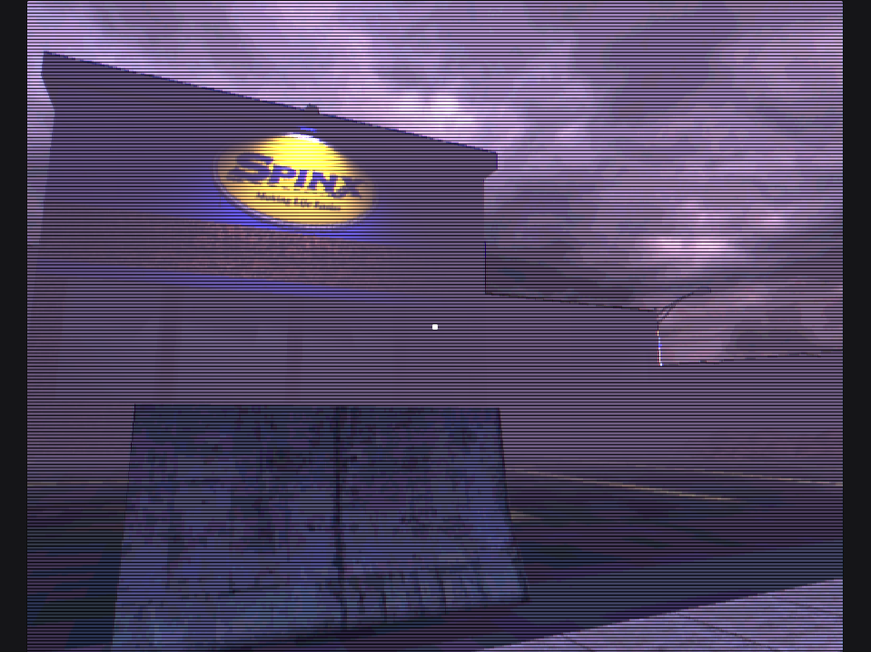
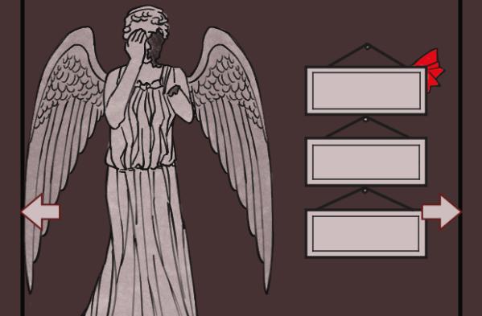
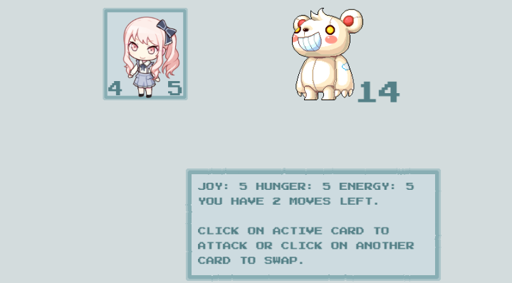

MYIQIS9 / ABOUT
About me
I'm Ema. I love making games and creating unique experiences.
My love is for programming. I like building systems from the ground up in code and seeing them all connect. I have created dialogue, battle, inventory, and item or resource management systems. I want to make games that are thrilling and unusual, but also allow the player careful planning over a wide range of mechanics.
Background
I have a DEC in Computer Science and a Bachelor's in Computation Arts at Concordia University. I have also studied abroad at Seinan Gakuin University in Fukuoka, Japan.
I am a recipient of the Behaviour Interactive Research Chair Bursary in Game Design. I have participated in many game jams, including the Brackeys Game Jam and GamerELLA.
Skillset
I have made games in Unity 5 & 6, Unreal Engine 5, GameMaker, and pure JS.
I know C++, C#, Javascript, Java, and Python.
I also have 3D modeling experience in both Blender and Maya.
I am not a solo developer — I am at my most comfortable working with others.
Contact
myiqis9 on itch.io | myiqis9 on GitHub
emv.rad@gmail.com
pathologic2 on Discord
MYIQIS9 / 01
First Day Protocol
Unreal Engine 5 | VR simulation
Presented at Ludodrome 2026.
First Day Protocol is a VR narrative experience meant to simulate the uncertainty and alienation felt on your first day at work.
I coded the mechanics in Unreal Blueprints, such as item interactions with small puzzles that involve placing boxes in the appropriate places and NPCs reacting to the player's actions and moving around at time-based events. I was also in charge of gameplay design, to ensure that the player has clear indicators of what they can do or where to go even in an environment design to be confusing.
MYIQIS9 / 02
Ratcon
Unity 6 | 2D isometric puzzle game
MYIQIS9 / 03
SOULBLADE
Unreal Engine 5 | Souls-like RPG
MYIQIS9 / 04
My heart belongs here
Unity 6 | First-person exploration

Play it here!
Made for Scream Jam 2026 in 5 days. A mainly solo project with help.
I made some 3D assets for the game and created the street layout. I also designed and drew the UI. I was in charge of level design, and guiding the player based on what has been discovered using streetlights.
The game also has items that the player can pick up and "shoot". Shooting corruption will remove it from the map, but items have limited uses.
I coded and implemented shaders to give the game a "retro" look, and to also serve as overlay for the "corruption". As you get closer to death, the screen becomes bright and distorted.
You, As i Made
Unity 6 | Gamified personality test
Play it here!
Group project made in 48 hours as part of the GAMERella Game Jam.
I made the game art as well as UI design/implementation and minor programming.
MYIQIS9 / 05
The Last Pilgrim
Unity 5 | Third-person shooter RPG

MYIQIS9 / 06
Escape Room
P5.JS | Point-and-click

Play it here!
Solo project made using p5.js library. A point & click escape room game in a mysterious setting with a player inventory, various puzzles and unique interactions for each item. I also made the game art!
Wonder Dungeon
Phaser 3 | Card battler

Play it here!
Solo project made using Phaser 3 library. Work in progress. Rogue-like deck builder in which you create a deck of cards to take into battle. Each card has unique abilities and stats to maintain outside battle. Cards can kill themselves or each other, die from hunger/exhaustion, refuse to battle if unhappy, and much more.
Fox Collector
P5.JS | Point-and-click
Play it here!
Solo project made using p5.js library. A quick management game in which you must feed each fox that enters the screen lest they leave hungry. Pet them after feeding for bonus points! Game art by me.